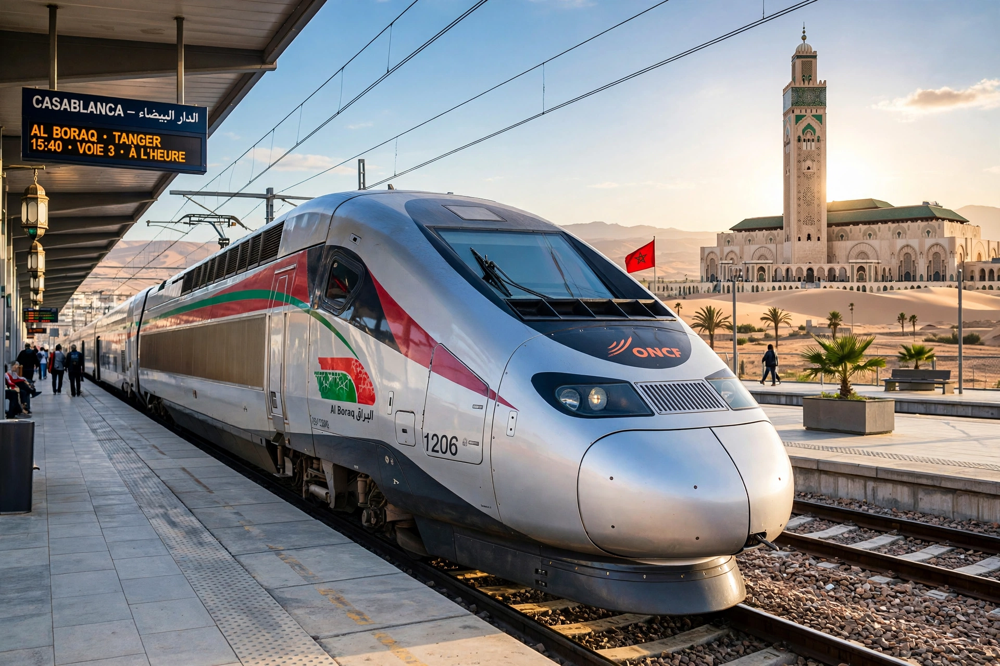

ONCF (French: Office National des Chemins de Fer) is Morocco's national railway operator, the state-owned company responsible for passenger and freight rail transport in Morocco.

| ONCF | |
|---|---|
| Founded | 1963 |
| Headquarters | Rabat, Morocco |
| Track length | c. 2,300 km |
| Key service | Al Boraq high-speed line |
The standard-gauge network links Tangier, Rabat, Casablanca, Marrakesh, Fes and Oujda, with about 1,000 km electrified. In November 2018 ONCF opened Al Boraq, Africa's first high-speed railway, between Tangier and Casablanca, with trains at up to 320 km/h.
Extensions of high-speed service to Marrakesh and Agadir and network expansion are planned in connection with major events including the 2030 FIFA World Cup. Compare Northeast Corridor.